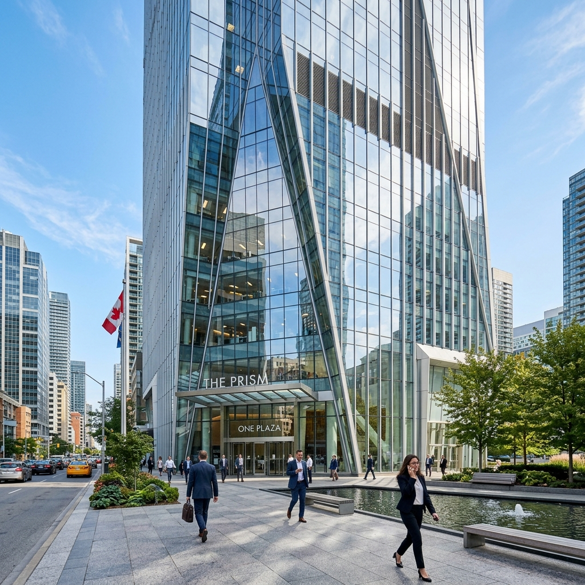

Curtain Wall & Glazing Washington, DCMetro Corridor Curtain Wall & Atrium Glazing
Full-envelope unitized curtain wall fabrication, Low-E insulated structural glass, and street-level thermally broken storefront installation.
View Glazing Scope →